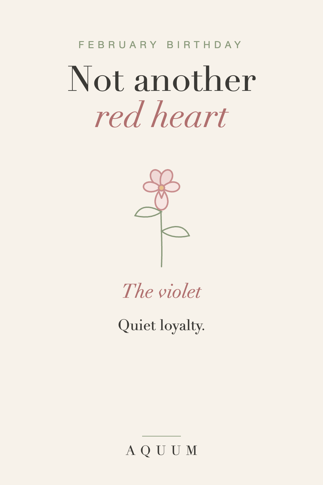

February Birthday Gift Ideas That Aren't Another Red Heart
2026-10-01
Written by the team behind Aquum, a small birth flower gift shop. How we make money.

A February birthday shares the month with Valentine's Day, and the stores make sure you notice: everything is red, pink and heart-shaped. A birthday gift that looks like a Valentine is the easy mistake.
The fix is a gift that's clearly about them, and the easiest way to get there is their month's flower.
Start with February's birth flower
February's birth flower is the violet, and it stands for quiet loyalty and modesty. It's small, purple and steady, nothing like the loud red of the season. February's second flower, the primrose, means youth and new love: a lovely choice for a younger friend or a new relationship.
Read the full February birth flower guide.
February birthday gift ideas
- A violet shirt, mug or tote, wrapped in birthday paper, never in Valentine's red.
- A pot of African violets for the windowsill; they bloom indoors through the winter.
- A cozy February plan: a warm dinner or a movie night on their actual birthday, not on the 14th.
- A card that names the meaning: "Your flower means quiet loyalty. That's you."
Before you give it
Keep it separate from Valentine's Day. If you're also their partner, give two gifts on two days. A combined "birthday-and-Valentine's" gift is the February version of the December problem.
Order early
Made-to-order gifts take about a week to be made and shipped in the US, so order at least a week before the birthday.
Shopping for Valentine's Day too? See our Valentine's Day birth flower gifts.
More months: birthday gift ideas for every month.